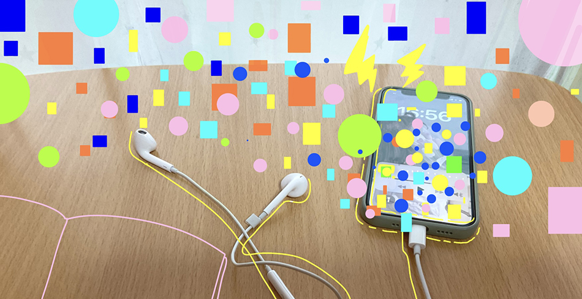
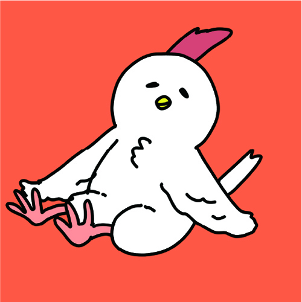

SAIKOUJAN Radio
NEWS
- 2023年のオールナイトニッポンも引き続き、山田裕貴、星野源、
SixTONES,星野源、霜降り明星で決定！
HAJIMARI
- 聴覚的メディアのラジオは
1920 年多くの人にリアルタイムで届けることを目的として派生した。
爆発的人気をラジオ発売当時は出したが、現在問題となるものは若者のラジオ離れ。
『ラジオってダサくない ?』
いやいや、最高におもしろいメディアだ。
OSUSUME

BEST3CORNER
1.We are SixTONES
我こそが SixTONES というリスナーが自己 PR するコーナーである。
リスナーがイケてる日常を紹介する。このコーナーではハガキ職人たちがたくさんおり、
センスのある内容ばかり紹介されている。
2. ヒロメネス
リスナーが都市伝説を考え紹介するコーナーである。
この都市伝説は嘘もありなため自由にリスナーが都市伝説を紹介する。
センスのあるリスナーたちが都市伝説を紹介するためクセになる。
3. 霜降り交遊録
霜降り明星が様々な芸能人、芸人と絡む様子を想像して紹介するコーナーである。
大御所芸能人、芸人などリスナーが想像で描く絡みは創造力に驚かされるものだ。
そしてその後にキレのあるツッコミを行う霜降り明星に注目である。
PROFILE
佐々木 華音（ささき かのん）
2003年生まれ
出身：広島県
中学生の頃にラジオと出会い、
ラジオのファンに。好きな食べ物は大葉。

2003年生まれ
出身：広島県
中学生の頃にラジオと出会い、
ラジオのファンに。好きな食べ物は大葉。